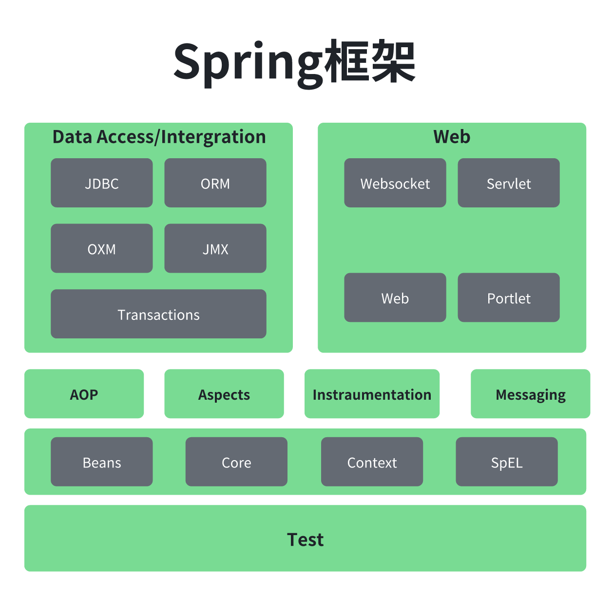
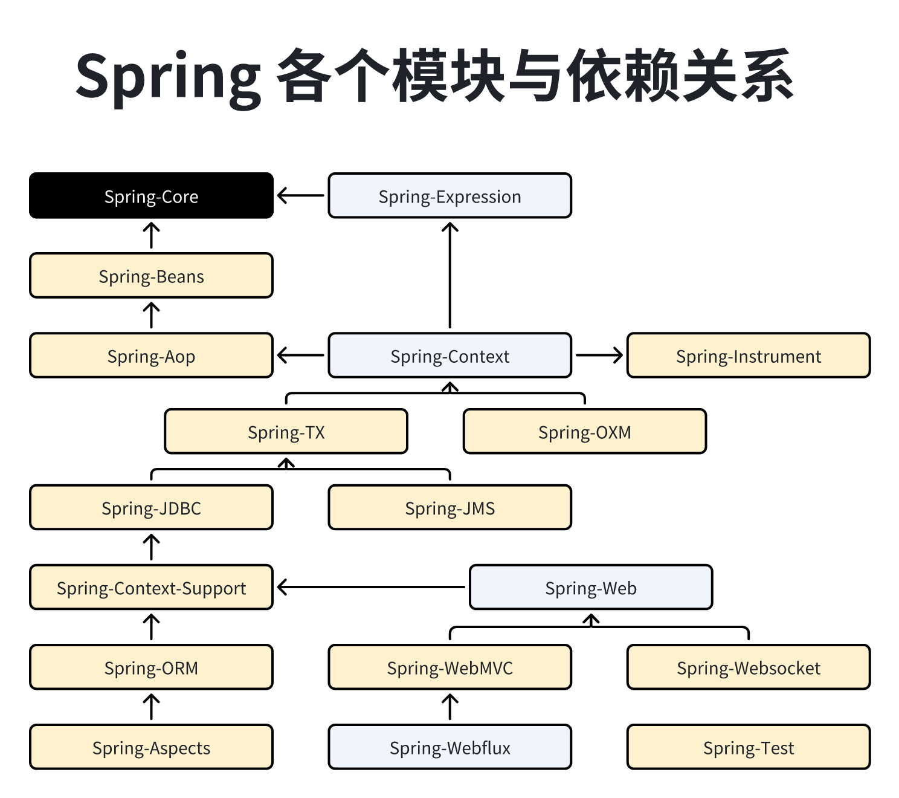
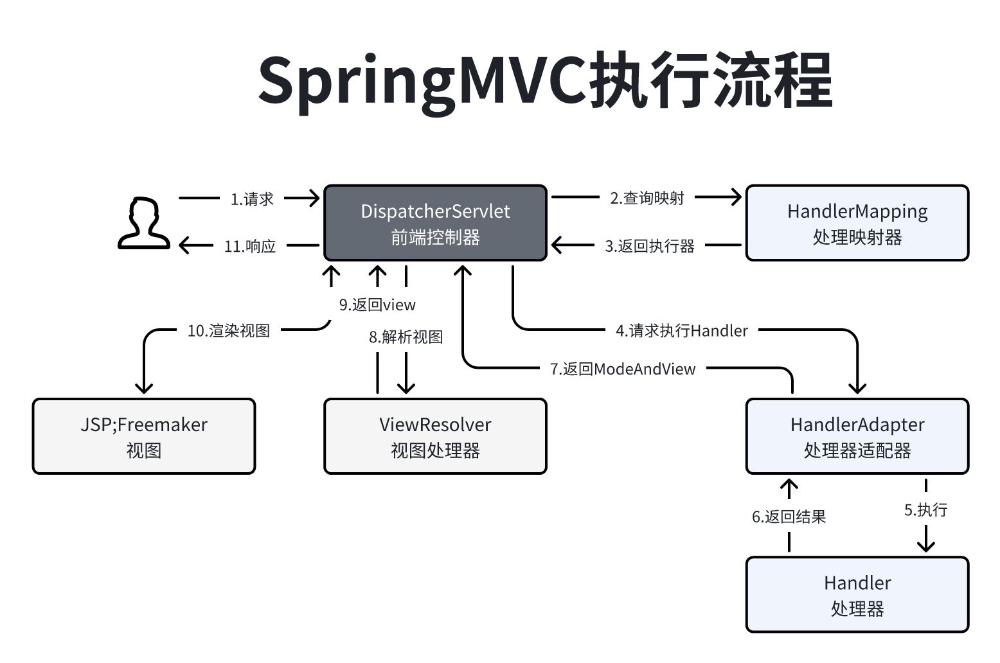

281介绍: Spring就是一个分层的JavaSE/EE一战式轻量级开源框架.2
3特点:4 -> 1.解耦: 通过IOC容器, 将对象与对象之间的依赖挂你由Spring进行控制, 减少了耦合.5 -> 2.AOP: 面向切面编程, Spring全面支持AOP, 解决了OOP(面向对象编程)带来的问题.6 -> 3.声明式事务.7 -> 4.集成测试: Spring支持Junit4可以通过注解方便单元测试.8 -> 5.集成各种优秀框架: Spring对各种框架提供了支持.9 -> 6.降低了JavaEE API使用难度.10
11优点:12 -> 1.低侵入, 代码污染低.13 -> 2.独立各种应用服务器, 基于Spring框架应用真正实现一次编码到处运行.14 -> 3.Spring的DI机制降低了对象替换的复杂性, 提高了组件之间的解耦.15 -> 4.Spring的aop支持运行一些通用的任务, 并进行通用管理, 提供服用.16 -> 5.Spring的ORM和DAO提供了与第三方持久化层良好的整合, 简化了数据库的访问.17
18内聚: 一个模块内的各个元素之间的紧密程度, 在实际应用中一个好的内聚模块应该只做一件事.19 -> 优点: 内聚和耦合之间密切相相关, 高耦合意味着低内聚, 低耦合就是高内聚, 设计目标就是低耦合高内聚.20 21耦合: 代码块之间的关联程度, 在实际应用中耦合度也指的是对象之间的依赖性, 对象之间的耦合越高, 维护成本越高.22
23Spring版本命名规范:24 -> Snapshot: 快照版, 尚不不稳定;尚处于开发中的版本.25 -> Release: 稳定版, 功能相对稳定, 可以对外发行, 但有时间限制.26 -> GA: General Availability正式版, 代表广泛可用的稳定版.27 -> M: Milestone里程碑版, 具有一些全新的功能或是具有里程碑意义的版本.28 -> RC: Release Candidate终测版, 即将作为正式版发布.

341功能:2 -> IOC: Inverse Of Control 控制反转, 对象的创建权利有程序反转给Spring程序.3 -> DI: Dependency Injection 依赖注入, 在Spring创建Bean时, 动态的将依赖注入到属性中.4 -> AOP: Aspect Oriented Programming 面向切面编程, 在不修改目标对象的情况下, 增强目标对象的功能.5 -> Spring容器: 指的就是IOC容器, 底层就是一个BeanFactory.6
7模块:8 -> spring-core: 依赖注入IOC与DI的最基本实现.9 -> spring-beans: Bean工厂与Bean的装配.10 -> spring-context: 定义基础的Spring的Context上下文即IOC容器.11 -> spring-context-support: 对Spring IOC容器的扩展支持, 以及IOC子容器.12 -> spring-context-indexer: Spring的类管理组件和Classpath扫描.13 -> spring-expression: Spring表达式语言.14 -> spring-aop: 面向切面编程的应用模块, 整合Asm;CGLIb;JDKProxy.15 -> spring-aspects: 集成AspectJ;AOP应用框架.16 -> spring-instrument: 动态Class Loading模块.17 -> spring-jdbc: Spring提供的JDBC抽象框架的主要实现模块, 用于简化Spring JDBC操作.18 -> spring-tx: Spring JDBC事务控制实现模块.19 -> spring-orm: 主要集成Hibernate;Java Persistence API(JPA)和Java Data Objects(JDO).20 -> spring-oxm: 将Java对象映射成XML数据, 或者将XML数据映射成Java对象.21 -> spring-jms: Java Messaging Service能够发送和接收信息.22 -> spring-web: 提供了最基础Web支持, 主要建立于核心容器之上, 通过Servlet或者Listeners初始化IOC容器.23 -> spring-webmvc: 实现了Spring MVC(model-view-Controller)的Web应用.24 -> spring-websocket: 主要是与Web前端的全双工通讯的协议.25 -> spring-webflux: 一个新的非堵塞函数式Reactive Web 框架, 可以用来建立异步;非阻塞, 事件驱动的服务.26 -> spring-messaging: Spring4开始有的, 主要职责是为Spring框架集成一些基础的报文传送应用.27 -> spring-test: 为测试提供支持的.28 -> spring-framework-bom: Bill of Materials, 解决Spring的不同模块依赖版本不同问题.29
30思考1: Spring中的Bean是线程安全的吗?31回答1: Spring中的bean初始化, 通过扫描, 利用反射new出来的, 并且缓存在IOC容器中, Spring本身没有对自己创建的bean做任何的处理, 因此Bean的线程是否安全取决于Bean的本身.32
33思考2: Spring中的Bean是如何被回收的?34回答2: Spring中的Bean的生命周期的问题singleton;prototype;session;request;Application. Spring中的Bean默认是singleton, 全局的是基于Spring创建的时候就初始化的, 随着Spring的存亡而存亡.151IOC介绍: Inversion Of Control控制反转, 就是以前通过业务代码来实现对象的创建, 现在直接让Spring容器来实现对象创建, IOC思想是在Spring之前就已经存在, Spring做了技术上的实现.2
3IOC好处: IOC通过控制对象解决了对象之间的耦合问题.4
5IOC和DI区别: IOC是站在对象的角度讲对象的创建交给了容器, DI是站在容器角度在创建对象时, 能够成功实例化对象.6
7Bean的生命周期:8 -> Singleton: 单例, 容器创建时创建, 容器销毁时销毁, 配置(默认是就是).9 -> Prototype: 原型, 使用时创建, 不使用时被GC回收, 配置(scope="prototype").10 -> Request: web单次请求, 在单次请求时被创建, 请求结束被销毁.11 -> Session: Web应用同一个Session, 创建Session时被创建, Session结束时被销毁.12 -> Application: Web应用整个上下文, 应用启动时被创建, 应用关闭时被销毁.13 -> Websocket: Websocket, 创建连接时被创建, 关闭连接时被销毁.14
15DI介绍: 依赖注入, 依赖指的是Bean中的属性.161OOP介绍: java面向对象编程, 封装;继承;多态. 是一种垂直的集成体系, 可以解决大部分代码重复的问题, 但是比如每个模块都需要监控这种代码无法解决.2
3AOP介绍: 面相切面编程, 通过横向抽取代码, 来达到降低代码重复实现解耦.4 5实现方式: SpringAOP主要通过动态代理实现,动态代理分为JDK和CGLib.6 -> JDK动态代理: 实现接口的方式实现动态代理.7 -> CGLib动态代理: 通过继承来实现动态代理.8
9AOP名词:10 -> 连接点: Joinpoint, ⽅法开始时;结束时;正常运⾏完毕时;⽅法异常时等特殊的时机点, 项⽬中每个⽅法都有连接点, 连接点是⼀种候选点(可以实现AOP方法的位置).11 -> 切⼊点: Pointcut, 真正实现了AOP增强的方法.12 -> 增强: Advice, 第⼀个层次, 指的是横切逻辑;第⼆个层次, ⽅位点, 在某⼀些连接点上加⼊横切逻辑, 那么这些连接点就叫做⽅位点, 描述的是具体的特殊时机.13 -> ⽬标对象: Target, 指的是代理的⽬标对象, 就是被代理对象.14 -> 代理: Proxy, 指的是⼀个类被AOP织⼊增强后, 产⽣的代理类. 即代理对象.15 -> 织⼊: Weaving, 指的是把增强应⽤到⽬标对象来创建新的代理对象的过程. Spring采⽤动态代理织⼊, ⽽AspectJ采⽤编译期织⼊和类装载期织⼊.16 -> 切⾯: Aspect, 切面=切⼊点+增强=切⼊点+⽅位点+横切逻辑.11介绍: Spring并不直接管理事务, 提供了事务管理接口PlatformTransactionManager, 通过此接口让各个平台自己实现自己的务管理器.
131介绍: 项目按照代码架构进行划分, 表现层, 业务层, DAO层, M-Model;V-View;C-Controller. MVC模式又叫模型视图控制器模式, SpringMVC属于表现层的一种框架.2
3SpringMVC与传统的Servlet区别:4 -> 传统Servlet: 在一个项目中每个处理类都是一个Servlet.5 -> SpringMVC: 全局只有一个DispatcherServlet来管理所有的请求, 将请求分发给各个的Controller进行处理, SpringMVC是对Servlet进行了封装, 使用起来更加方便.6
7处理流程:8 -> 1.前段控制器DispatchServlet收到请求.9 -> 2.将请求派发给处理器映射器HandlerMapping获取到执行处理器的执行链.10 -> 3.将获取到Handler找到处理器适配器，进行处理(Controller)获取到ModelAndView/data.11 -> 4.如果返回的是ModelAndView找到视图解析器, 返回一个View.12 -> 5.渲染视图.13 -> 6.返回请求.POM
171<dependency>2 <groupId>org.springframework</groupId>3 <artifactId>spring-context</artifactId>4 <version>5.1.6.RELEASE</version>5</dependency>6
7<!-- 基于AspectJ的aop依赖 -->8<dependency>9 <groupId>org.springframework</groupId>10 <artifactId>spring-aop</artifactId>11 <version>5.1.12.RELEASE</version>12</dependency>13<dependency>14 <groupId>org.aspectj</groupId>15 <artifactId>aspectjweaver</artifactId>16 <version>1.9.4</version>17</dependency>Context配置
441 2<beans xmlns="http://www.springframework.org/schema/beans"3 xmlns:aop="http://www.springframework.org/schema/aop"4 xmlns:xsi="http://www.w3.org/2001/XMLSchema-instance"5 xsi:schemaLocation="http://www.springframework.org/schema/beans6 https://www.springframework.org/schema/beans/spring-beans.xsd7 http://www.springframework.org/schema/aop8 https://www.springframework.org/schema/aop/spring-aop.xsd">9
10 <!--connectionUtils-->11 <bean id="connectionUtils" class="cn.spring.demo.utils.ConnectionUtils"></bean>12
13 <!--DAO-->14 <bean id="accountDao" class="cn.spring.demo.dao.impl.JdbcAccountDaoImpl">15 <property name="connectionUtils" ref="connectionUtils"></property>16 </bean>17
18 <!--初始化Service-->19 <bean id="transferService" class="cn.spring.demo.service.impl.TransferServiceImpl">20 <property name="accountDao" ref="accountDao"></property>21 </bean>22 23 <!--AOP 配置-->24 <bean id="logAop" class="cn.spring.demo.aop.LogAOP"/>25 <aop:config>26 <!--切面 = 切⼊点（锁定⽅法） + ⽅位点（锁定⽅法中的特殊时机）+ 横切逻辑-->27 <aop:aspect id="ap1" ref="logAop">28 <!--切入点 cn.spring.demo.service.impl.TransferServiceImpl#transfer方法-->29 <aop:pointcut expression="execution(void cn..transfer(..))" id="pt1"/>30
31 <!--方位点-->32 <!--前置增强-->33 <aop:before method="beforeMethod" pointcut-ref="pt1"/>34 <!--后置增强-->35 <aop:after method="afterMethod" pointcut-ref="pt1"/>36 <!--返回增强-->37 <aop:after-returning method="returenMethod" pointcut-ref="pt1"/>38 <!--异常增强-->39 <aop:after-throwing method="exceptionMethod" pointcut-ref="pt1"/>40 <!--环绕增强-->41 <aop:around method="aroundMethod" pointcut-ref="pt1"/>42 </aop:aspect>43 </aop:config>44</beans>Bean
941/**2 * 连接类 已经通过上下文配置加载到ioc容器中3 */4public class ConnectionUtils {5 //在创建类的时候就需要创建一个ThreadLocal6 private static ThreadLocal<Connection> threadLocal = new ThreadLocal<>();7
8 /**9 * 获取到连接10 */11 public Connection getConnection() throws SQLException {12 Connection connection = threadLocal.get();13
14 if (connection == null) {15 try {16 connection = DruidUtils.getInstance().getConnection();17 } catch (SQLException ex) {18 throw ex;19 }20 threadLocal.set(connection);21 }22
23 return connection;24 }25}26
27/**28 * DAO 层 IOC容器已经注入属性了29 */30public class JdbcAccountDaoImpl{31
32 private ConnectionUtils connectionUtils;33
34 public void setConnectionUtils(ConnectionUtils connectionUtils) {35 this.connectionUtils = connectionUtils;36 }37
38 39 public Account queryAccountByCardNo(String cardNo) throws Exception {40 //一个线程对应一个连接对象41 Connection con = connectionUtils.getConnection();42
43 String sql = "select * from account where cardNo=?";44 PreparedStatement preparedStatement = con.prepareStatement(sql);45 preparedStatement.setString(1,cardNo);46 ResultSet resultSet = preparedStatement.executeQuery();47
48 Account account = new Account();49 while(resultSet.next()) {50 account.setCardNo(resultSet.getString("cardNo"));51 account.setName(resultSet.getString("name"));52 account.setMoney(resultSet.getInt("money"));53 }54
55 resultSet.close();56 preparedStatement.close();57 return account;58 }59
60 61 public int updateAccountByCardNo(Account account) throws Exception {62 Connection con = connectionUtils.getConnection();63 String sql = "update account set money=? where cardNo=?";64 PreparedStatement preparedStatement = con.prepareStatement(sql);65 preparedStatement.setInt(1,account.getMoney());66 preparedStatement.setString(2,account.getCardNo());67 int i = preparedStatement.executeUpdate();68
69 preparedStatement.close();70 return i;71 }72}73
74/**75 * Service层 IOC容器已经注入属性了76 */77public class TransferServiceImpl {78
79 private AccountDao accountDao;80 public void setAccountDao(AccountDao accountDao) {81 this.accountDao = accountDao;82 }83
84 //通过动态代理解决事务 ProxyFactory(aop增强)85 public void transfer(String fromCardNo, String toCardNo, int money) throws Exception {86 Account from = accountDao.queryAccountByCardNo(fromCardNo);87 Account to = accountDao.queryAccountByCardNo(toCardNo);88 from.setMoney(from.getMoney() - money);89 to.setMoney(to.getMoney() + money);90 accountDao.updateAccountByCardNo(to);91 //int i = 1 / 0;92 accountDao.updateAccountByCardNo(from);93 }94}aop增强类
491public class LogAOP {2 /**3 * 方法执行之前4 */5 public void beforeMethod(JoinPoint joinPoint){6 System.out.println(joinPoint);7 System.out.println("方法执行之前");8 }9
10 /**11 * 方法执行之后12 */13 public void afterMethod(){14 System.out.println("方法执行之后");15 }16
17 /**18 * 方法执行返回执行19 */20 public void returenMethod(){21 System.out.println("方法执行返回执行");22 }23
24 /**25 * 方法异常通知26 */27 public void exceptionMethod(){28 System.out.println("方法异常通知");29 }30
31 /**32 * 环绕通知33 */34 public Object aroundMethod(ProceedingJoinPoint proceedingJoinPoint){35 Object proceed = null;36 try {37 System.out.println("前置增强");38 proceed = proceedingJoinPoint.proceed();39 System.out.println("后置增强");40 } catch (Throwable throwable) {41 throwable.printStackTrace();42 System.out.println("异常增强");43 }finally {44 System.out.println("返回增强");45
46 }47 return proceed;48 }49}POM
241<dependency>2 <groupId>org.springframework</groupId>3 <artifactId>spring-context</artifactId>4 <version>5.1.6.RELEASE</version>5</dependency>6
7<!--WebMVC-->8<dependency>9 <groupId>org.springframework</groupId>10 <artifactId>spring-web</artifactId>11 <version>5.1.6.RELEASE</version>12</dependency>13
14<!-- 基于AspectJ的aop依赖 -->15<dependency>16 <groupId>org.springframework</groupId>17 <artifactId>spring-aop</artifactId>18 <version>5.1.12.RELEASE</version>19</dependency>20<dependency>21 <groupId>org.aspectj</groupId>22 <artifactId>aspectjweaver</artifactId>23 <version>1.9.4</version>24</dependency>配置类
371// jdbc.properties2//jdbc.driverClassName=com.mysql.jdbc.Driver3//jdbc.url=jdbc:mysql://localhost:3306/bank4//jdbc.username=root5//jdbc.password=admin6
7/**8 * 配置类9 */10(basePackages = {"cn.spring.demo"})12({"classpath:jdbc.properties"})13//@Import(Xxx.class) 引入其他的配置类14public class ApplicationConfig {15
16 /**17 * 引入properties中的dataSource配置信息18 */19 ("${jdbc.driverClassName}")20 private String driverClassname;21 ("${jdbc.url}")22 private String url;23 ("${jdbc.username}")24 private String username;25 ("${jdbc.password}")26 private String password;27
28 ("dataSource")29 public DataSource dataSource(){30 DruidDataSource dataSource = new DruidDataSource();31 dataSource.setDriverClassName(driverClassname);32 dataSource.setUrl(url);33 dataSource.setUsername(username);34 dataSource.setPassword(password);35 return dataSource;36 }37}DAO
881// PO2public class Account {4 private String cardNo;5 private String name;6 private int money;7}8
9/**10 * 获取连接池11 */12public class ConnectionUtils {14
15 16 private DataSource dataSource;17
18 //在创建类的时候就需要创建一个ThreadLocal19 private static ThreadLocal<Connection> threadLocal = new ThreadLocal<>();20 // 获取连接池21 public Connection getConnection() throws SQLException {22 Connection connection = threadLocal.get();23
24 if (connection == null) {25 try {26 connection = dataSource.getConnection();27 } catch (SQLException ex) {28 throw ex;29 }30 threadLocal.set(connection);31 }32 return connection;33 }34}35
36/**37 * DAO接口38 */39public interface AccountDao {40
41 //查询42 Account queryAccountByCardNo(String fromCardNo) throws Exception;43
44 //修改45 int updateAccountByCardNo(Account to) throws Exception;46}47
48/**49 * DAO实现50 */51public class JdbcAccountDaoImpl implements AccountDao {53
54 55 private ConnectionUtils connectionUtils;56
57 58 public Account queryAccountByCardNo(String cardNo) throws Exception {59 //一个线程对应一个连接对象60 Connection con = connectionUtils.getConnection();61 String sql = "select * from account where cardNo=?";62 PreparedStatement preparedStatement = con.prepareStatement(sql);63 preparedStatement.setString(1,cardNo);64 ResultSet resultSet = preparedStatement.executeQuery();65 Account account = new Account();66 while(resultSet.next()) {67 account.setCardNo(resultSet.getString("cardNo"));68 account.setName(resultSet.getString("name"));69 account.setMoney(resultSet.getInt("money"));70 }71 resultSet.close();72 preparedStatement.close();73 return account;74 }75
76 77 public int updateAccountByCardNo(Account account) throws Exception {78 // 改造为：从当前线程当中获取绑定的connection连接79 Connection con = connectionUtils.getConnection();80 String sql = "update account set money=? where cardNo=?";81 PreparedStatement preparedStatement = con.prepareStatement(sql);82 preparedStatement.setInt(1,account.getMoney());83 preparedStatement.setString(2,account.getCardNo());84 int i = preparedStatement.executeUpdate();85 preparedStatement.close();86 return i;87 }88}Service
341/**2 * 转账Service3 */4public interface TransferService {5 void transfer(String fromCardNo,String toCardNo,int money) throws Exception;6}7
8/**9 * Service实现10 */11public class TransferServiceImpl implements TransferService {13
14 /**15 * 第二版本的DAO 使用工厂的方式来进行解耦16 * 通过反射的方式来复制值17 */18 19 private AccountDao accountDao;20
21 //通过动态代理解决事务 ProxyFactory22 23 public void transfer(String fromCardNo, String toCardNo, int money) throws Exception {24 Account from = accountDao.queryAccountByCardNo(fromCardNo);25 Account to = accountDao.queryAccountByCardNo(toCardNo);26
27 from.setMoney(from.getMoney() - money);28 to.setMoney(to.getMoney() + money);29
30 accountDao.updateAccountByCardNo(to);31 //int i = 1 / 0;32 accountDao.updateAccountByCardNo(from);33 }34}Servlet
511(name="transferServlet5",urlPatterns = "/transferServlet5")2public class TransferServlet extends HttpServlet {3 4 private TransferService transferService;5
6 //初始化方法7 8 public void init() throws ServletException {9 //通过工具类获取到IOC容器10 WebApplicationContext webApplicationContext = WebApplicationContextUtils11 .getWebApplicationContext(this.getServletContext());12
13 //初始化参数14 ProxyFactory proxyFactory = (ProxyFactory) webApplicationContext.getBean("proxyFactory");15 transferService =(TransferService) proxyFactory16 .getJDKProxy(webApplicationContext.getBean("transferService"));17 }18
19 // get请求处理20 21 protected void doGet(HttpServletRequest req, HttpServletResponse resp) 22 throws ServletException, IOException {23 doPost(req,resp);24 }25 26 // post请求处理27 28 protected void doPost(HttpServletRequest req, HttpServletResponse resp) 29 throws ServletException, IOException {30
31 // 设置请求体的字符编码32 req.setCharacterEncoding("UTF-8");33 String fromCardNo = req.getParameter("fromCardNo");34 String toCardNo = req.getParameter("toCardNo");35 String moneyStr = req.getParameter("money");36 int money = Integer.parseInt(moneyStr);37 Result result = new Result();38 try {39 // 2. 调用service层方法40 transferService.transfer(fromCardNo,toCardNo,money);41 result.setStatus("200");42 } catch (Exception e) {43 e.printStackTrace();44 result.setStatus("201");45 result.setMessage(e.toString());46 }47 // 响应48 resp.setContentType("application/json;charset=utf-8");49 resp.getWriter().print(JsonUtils.object2Json(result));50 }51}AOP实现事务
891/**2 * 事务管理器3 */4public class TransactionManager {6
7 8 private ConnectionUtils connectionUtils;9
10 /**11 * 将事务设置为手动提交12 */13 public void openTx() throws SQLException {14 Connection connection = connectionUtils.getConnection();15 connection.setAutoCommit(false);16 }17
18 /**19 * 提交事务20 */21 public void commit() throws SQLException {22 Connection connection = connectionUtils.getConnection();23 connection.commit();24 }25
26 /**27 * 回滚事务28 */29 public void rollback() throws SQLException{30 Connection connection = connectionUtils.getConnection();31 connection.rollback();32 }33}34
35/**36 * 代理工厂实现事务37 */38public class ProxyFactory {40
41 42 private TransactionManager transactionManager;43
44 // 用jdk动态代理集45 public Object getJDKProxy(Object target) {46 return Proxy.newProxyInstance(47 this.getClass().getClassLoader(),48 target.getClass().getInterfaces(),49 new InvocationHandler() {50 51 public Object invoke(Object proxy, Method method, Object[] args) throws Throwable {52 Object invoke = null;53 try {54 //开启事务55 transactionManager.openTx();56 invoke = method.invoke(target, args);57 transactionManager.commit();58 } catch (Exception ex) {59 ex.printStackTrace();60 transactionManager.rollback();61 throw ex;62 }63 return invoke;64 }65 });66 }67
68 // CGLib动态代理s69 public Object getCGLibProxy(Object target){70 return Enhancer.create(target.getClass(), new MethodInterceptor(){71 72 public Object intercept(Object o, Method method, Object[] objects, MethodProxy methodProxy) 73 throws Throwable {74 Object invoke = null;75 try {76 //开启事务77 transactionManager.openTx();78 invoke = method.invoke(target, objects);79 transactionManager.commit();80 } catch (Exception ex) {81 ex.printStackTrace();82 transactionManager.rollback();83 throw ex;84 }85 return invoke;86 }87 });88 }89}241// 导入配置2(LoadConditionConfig.class)4public class ConditionDemo {5}6
7// 加载配置信息8public class LoadConditionConfig implements Condition {10 11 public boolean matches(ConditionContext conditionContext, AnnotatedTypeMetadata annotatedTypeMetadata) {12 if (conditionContext.getBeanFactory().containsBean("person")) {13 return true;14 }15 return false;16 }17}18
19// IOC容器配置20("cn.spring.demo")22({Man.class})23public class IocConfig {24}POM
481<dependencies>2 <dependency>3 <groupId>junit</groupId>4 <artifactId>junit</artifactId>5 <version>4.12</version>6 <scope>test</scope>7 </dependency>8
9 <!--引入spring webmvc的依赖-->10 <dependency>11 <groupId>org.springframework</groupId>12 <artifactId>spring-webmvc</artifactId>13 <version>5.1.12.RELEASE</version>14 </dependency>15 <dependency>16 <groupId>javax.servlet</groupId>17 <artifactId>javax.servlet-api</artifactId>18 <version>3.1.0</version>19 <scope>provided</scope>20 </dependency>21
22
23 <!--json数据交互所需jar，start-->24 <dependency>25 <groupId>com.fasterxml.jackson.core</groupId>26 <artifactId>jackson-core</artifactId>27 <version>2.9.0</version>28 </dependency>29 <dependency>30 <groupId>com.fasterxml.jackson.core</groupId>31 <artifactId>jackson-databind</artifactId>32 <version>2.9.0</version>33 </dependency>34 <dependency>35 <groupId>com.fasterxml.jackson.core</groupId>36 <artifactId>jackson-annotations</artifactId>37 <version>2.9.0</version>38 </dependency>39 <!--json数据交互所需jar，end-->40
41
42 <!--文件上传-->43 <dependency>44 <groupId>commons-fileupload</groupId>45 <artifactId>commons-fileupload</artifactId>46 <version>1.3.1</version>47 </dependency>48</dependencies>文件上传Controller
291("/demo")3public class FileUploadController {4 (value = "/uploadFile" , method = RequestMethod.POST)5 public String uploadFile(MultipartFile multipartFile, HttpSession session) throws IOException {6 //存储在项目的webapp的根目录下，需要找到绝对路径， 通过Session7 String realPath = session.getServletContext().getRealPath("/WEB-INF");8 //根据日期存储文件避免单个目录下文件数量过多9 String datePath = new SimpleDateFormat("yyyy-MM-dd").format(new Date());10 //获取到文件判断是否存在不存在需要进行创建11 File file = new File(realPath + "/" + datePath);12 if (!file.exists()) {13 file.mkdir();14 }15
16 //获取到文件名 生成一个随机的文件名避免重复17 String fileName = UUID.randomUUID().toString().replaceAll("-", "");18 String extendName = multipartFile.getOriginalFilename()19 .substring(multipartFile.getOriginalFilename().indexOf("."));20 21 fileName = fileName + extendName;22
23 //存储文件24 multipartFile.transferTo(new File(file, fileName));25 26 //返回27 return "success fileName:" + fileName;28 }29}普通的Controller
151public class RedirectController {3 ("/handlerA")4 public String handlerA(String name, RedirectAttributes redirectAttributes){5 redirectAttributes.addFlashAttribute("name", name);6 System.out.println(name);7 return "redirect:handlerB";8 }9 10 ("/handlerB")11 public String handlerB(("name") String name){12 System.out.println(name);13 return "success";14 }15}全局异常处理器
101public class GlobalExceptionResolver {3 4 public ModelAndView handleException(RuntimeException runtimeException){5 ModelAndView modelAndView = new ModelAndView();6 modelAndView.addObject("msg",runtimeException);7 modelAndView.setViewName("error");8 return modelAndView;9 }10}拦截器
351public class InterceptorDemo implements HandlerInterceptor {2 /**3 *在controller方法业务逻辑执行之前，4 * 常用与权限控制5 * @return 返回值boolean代表是否放行，true代表放行，false代表中止6 */7 8 public boolean preHandle(HttpServletRequest request, HttpServletResponse response, 9 Object handler) throws Exception {10 System.out.println("MyInterceptor01 preHandle......");11 //TODO 权限控制12 return true;13 }14
15 /**16 * 会在handler方法业务逻辑执行之后尚未跳转页面时执行17 * @Param modelAndView 封装了视图和数据，此时尚未跳转页面呢，你可以在这里针对返回的数据和视图信息进行修改18 */19 20 public void postHandle(HttpServletRequest request, HttpServletResponse response, 21 Object handler, ModelAndView modelAndView) throws Exception {22 System.out.println("MyInterceptor01 postHandle......");23
24 }25
26 /**27 * 页面已经跳转渲染完毕之后执行28 * @param ex 可以在这里捕获异常29 */30 31 public void afterCompletion(HttpServletRequest request, HttpServletResponse response, 32 Object handler, Exception ex) throws Exception {33 System.out.println("MyInterceptor01 afterCompletion......");34 }35}POM
171<dependency>2 <groupId>org.springframework</groupId>3 <artifactId>spring-context</artifactId>4 <version>5.1.6.RELEASE</version>5</dependency>6
7<!-- 基于AspectJ的aop依赖 -->8<dependency>9 <groupId>org.springframework</groupId>10 <artifactId>spring-aop</artifactId>11 <version>5.1.12.RELEASE</version>12</dependency>13<dependency>14 <groupId>org.aspectj</groupId>15 <artifactId>aspectjweaver</artifactId>16 <version>1.9.4</version>17</dependency>配置类
291 2("com.haojin.spring")3public class SpringConfig {4 5 public DataSource getDataSource(){ 6 DruidDataSource druidDataSource = new DruidDataSource();7 //设置用于连接数据库的 用户 密码 url 驱动8 druidDataSource.setUrl("jdbc:mysql://localhost:3306/spring?characterEncoding=utf-8&useSSL=false");9 druidDataSource.setUsername("root");10 druidDataSource.setPassword("abc123");11 druidDataSource.setDriverClassName("com.mysql.cj.jdbc.Driver");12 return druidDataSource;13 }14
15 16 public JdbcTemplate getJdbcTemplate(DataSource dataSource){ 17 JdbcTemplate jdbcTemplate = new JdbcTemplate(); 18 jdbcTemplate.setDataSource(dataSource); 19 return jdbcTemplate;20 }21
22 23 public DataSourceTransactionManager getDataSourceTransactionManager(DataSource dataSource){24 //获取DataSourceTransactionManager对象25 DataSourceTransactionManager dataSourceTransactionManager = new DataSourceTransactionManager(); 26 dataSourceTransactionManager.setDataSource(dataSource);27 return dataSourceTransactionManager;28 }29}使用
281直接在方法上边贴注解2 3注解属性说明:4 -> 只读: (readOnly = true), 修改操作java.sql.SQLException: Connection is read-only.5 6 -> 超时: (timeout = 3), 3s超时TransactionTimedOutException.7 8 -> 回滚:9 --> (noRollbackFor = Exception.class), 异常回滚.10 --> (rollbackForClassName = 全类名), 遇到这个类就回滚.11
12 -> 隔离级别:13 --> (isolation = Isolation.DEFAULT), 使用数据库默认的隔离级别.14 --> (isolation = Isolation.READ_UNCOMMITTED), 读未提交.15 --> (isolation = Isolation.READ_COMMITTED), 读已提交.16 --> (isolation = Isolation.REPEATABLE_READ), 可重复读.17 --> (isolation = Isolation.SERIALIZABLE), 串行化.18 19 -> 传播行为:20 --> (propagation = Propagation.REQUIRED), 支持当前事务如果不存在就新建一个.21 --> (propagation = Propagation.SUPPORTS), 支持当前事务如果当前没有事务就以非事务方式执行.22 --> (propagation = Propagation.MANDATORY), 必须运行在一个事务中如果当前没有事务正在发生将抛出一个异常.23 --> (propagation = Propagation.REQUIRES_NEW), 开启一个新的事务如果一个事务已经存在则将这个存在的事务挂起.24 --> (propagation = Propagation.NOT_SUPPORTED), 以非事务方式运行如果有事务存在挂起当前事务.25 --> (propagation = Propagation.NEVER), 以非事务方式运行如果有事务存在抛出异常.26 --> (propagation = Propagation.NESTED), 如果当前正有一个事务在进行中则该方法应当运行在一个嵌套式事务中. 27 被嵌套的事务可以独立于外层事务进行提交或回滚. 如果外层事务不存在, 行为就像REQUIRED一样.28
POM
121<!--spring坐标-->2<dependency>3 <groupId>org.springframework</groupId>4 <artifactId>spring-context</artifactId>5 <version>5.0.9.RELEASE</version>6</dependency>7<!--解析切入点表达式-->8<dependency>9 <groupId>org.springframework</groupId>10 <artifactId>spring-aspects</artifactId>11 <version>5.0.9.RELEASE</version>12</dependency>配置类
61 2({"demo"})3//开启生成切面的代理对象4public class SpringConfig {6}需要增强的方法
181package demo;2
3 4public class PaperService {6 public void publishUpdate(){7 System.out.println("论文已发布");8 }9 public void updatePaper(){10 System.out.println("论文已修改");11 }12 public void deletePaper(){13 System.out.println("论文已删除");14 }15 public void selectList(){16 System.out.println("查询论文");17 }18}横切面方法
791package demo;2 3import org.aspectj.lang.ProceedingJoinPoint;4import org.aspectj.lang.annotation.*;5import org.springframework.stereotype.Component;6 7 //表示这是一个切面类9public class Logger {10 11 ("execution(* demo.*.*(..))")//设置切入点表达式12 private void pott(){}13 14 /**15 * 前置通知16 * 应用场景：权限控制（权限不足抛出异常）、记录方法调用信息日志17 */18 ("pott()")19 public void beforePrintLog(){20 System.out.println("前置通知Logger类中的beforePrintLog方法开始记录日志******");21 }22 23 /**24 * 后置通知，在异常时不执行25 * 特点：在目标方法运行后返回值后再增强代码逻辑26 * 应用：与业务相关的，如银行在存取款结束后的发送短信消息27 */28 ("pott()")29 public void afterReturningPrintLog() {30 System.out.println("后置通知Logger类中的afterReturningPrintLog方法开始记录日志=========");31 }32 33 /**34 * 异常通知35 * 作用：目标代码出现异常，通知执行。记录异常日志、通知管理员（短信、邮件）36 * 应用场景：处理异常（一般不可预知），记录日志37 */38 ("pott()")39 public void afterThrowingPrintLog() {40 System.out.println("异常通知Logger类中的afterThrowingPrintLog方法开始记录日志++++++++++++");41 }42 43 /**44 * 最终通知，不管异常与否45 * 作用：不管目标方法是否发生异常，最终通知都会执行（类似于finally代码功能）46 * 应用场景：释放资源 （关闭文件、 关闭数据库连接、 网络连接、 释放内存对象 ）47 */48 ("pott()")49 public void afterPrintLog() {50 System.out.println("最终通知Logger类中的afterPrintLog方法开始记录日志&&&&&&&&&&&&&&&&&&");51 }52 53 /**54 * 环绕通知55 * 特点：目标方法执行前后，都进行增强（控制目标方法执行）56 * 应用：日志、缓存、权限、性能监控、事务管理57 */58 ("pott()")59 public Object aroundPrintLog(ProceedingJoinPoint point){60 //定义返回值61 Object result = null;62 try {63 //获得切入点中方法的参数列表64 Object[] args = point.getArgs();65 //调用前置通知66 beforePrintLog();67 //执行切入点的方法68 result = point.proceed(args);69 //调用后置通知70 afterReturningPrintLog();71 } catch (Exception e){72 //调用异常通知73 afterThrowingPrintLog();74 } catch (Throwable throwable) {75 throwable.printStackTrace();76 }77 return result;78 } 79}